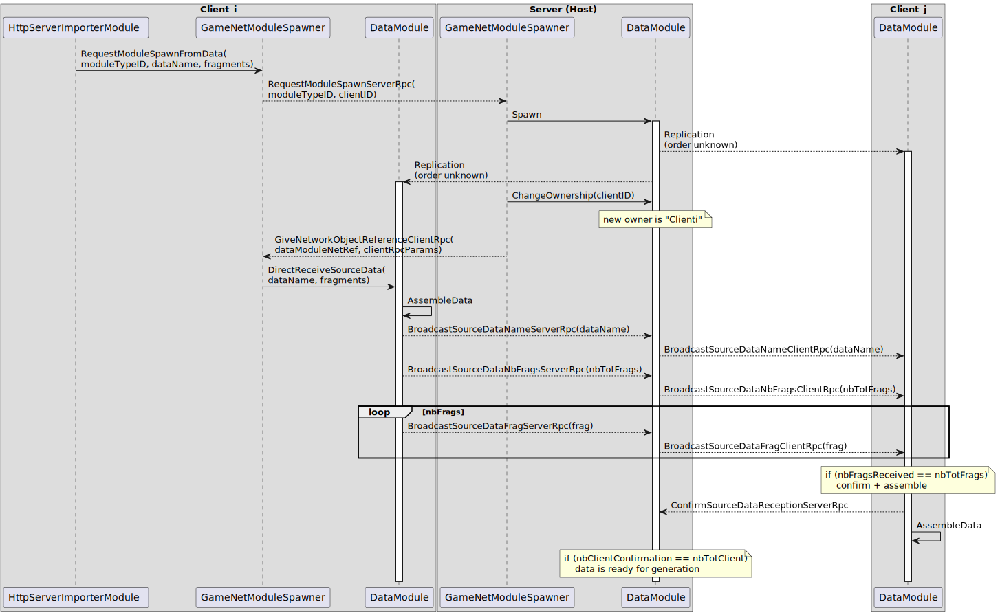
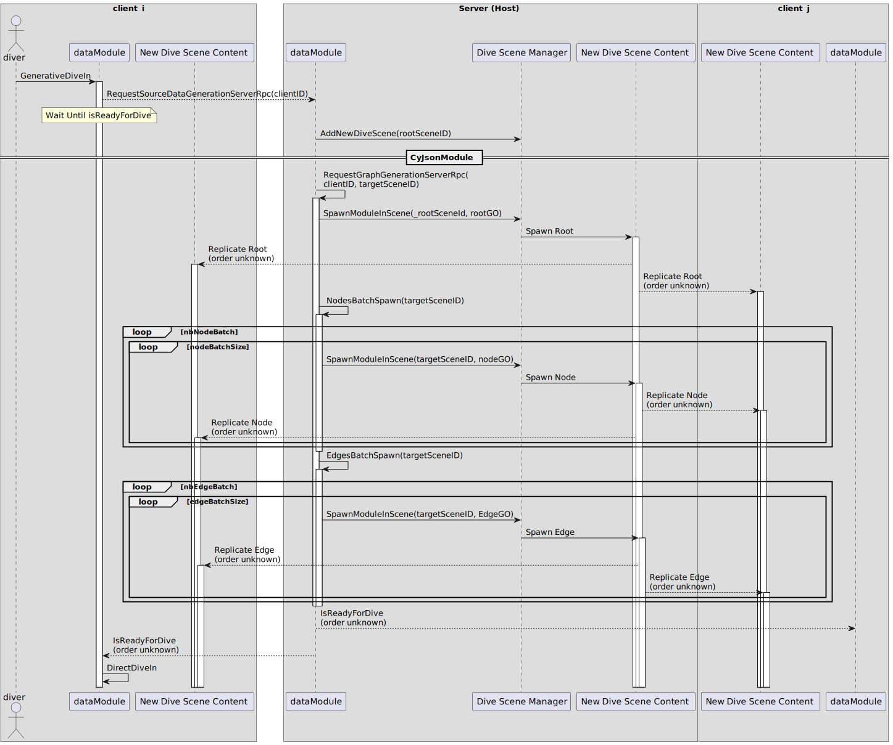

The multiplayer feature of ECellDive is powered by Unity's solution Netcode for GameObjects (NetGO). To use NetGO, it is mandatory to include a gameobject with a NetworkManager component and a Transport component. The former is high-level singleton wrapper to control main settings (e.g., tick rates, log level, network player and objects prefab) and subsystems (e.g., network object spawning, scene management, server start). The latter is the low-level layer to handle network protocols and data packets. It is possible to write custom Transport to solve special needs but we are using the default Unity Transport for this project. It might be relevant later to implement our own or, at least, adapt a bit Unity's default one to smooth the broadcast of large model files between users in ECellDive. You may find those two components attached to the gameobject (GO) named NetworkManager in the Unity Scene called Main of this project.
Hosting and Joining
We used the sample project Boss Room to jump start the host/client architecture of our project. The core of the hosting/connection system in ECellDive is handled by the components GameNetPortal, ServerGameNetPortal, and ClientGameNetPortal (all are singletons and ServerGameNetPortal should not exist at the same time as ClientGameNetPortal); while the UI to enter server's settings and whether to host or join pass by the module (and component) MultiplayerModule and its 2D UI menu MultiplayerMenuManager.
- MultiplayerModule's role is to give visual feedback that the connection is currently trying to be processed and to indicate whether it is a success (green flashes) or a failure (red flashes).
- MultiplayerMenuManager's role is to retrieve the information given by the user to connect to the server (IPv4, Port, Player Name, and password), and then to ask the GameNetPortal to start a host or a client based on the information.
- GameNetPortal has three essential methods at this stage which are StartHost, StartClient, and OnNetworkReady.
- StartClient directly gives a call to the ClientGameNetPortal's own StartClient. It will process the connection data and then transfer the call to the
NetworkManager.StartClient(). - StartHost will first check whether the user is already a host. If so, it will Restart before calling
NetworkManager.StartHost()
- StartClient directly gives a call to the ClientGameNetPortal's own StartClient. It will process the connection data and then transfer the call to the
- Once the
NetworkManagerhas started a host or connected the current user as a client to a host, it will trigger the eventNetworkManager.OnClientConnectedCallbackto which GameNetPortal's method OnNetworkReady is subscribed. - OnNetworkReady's role is to close the connection protocol for ServerGameNetPortal and ClientGameNetPortal through their own
OnNetworkReady.
Broadcast Data
NetGO gives two solutions to share data between over the network between clients. The first is NetworkVariables and the second is Remote Procedure Calls.
"Small ones" with NetworkVariables
In ECellDive we used network variables to easily synchronize "small" data. For example, the currentColor in the interface IColorHighlightableNet to synchronize the color change of modules when users point at them. This is very useful to easily share on the network which module a user is currently interacting with. Or the knockout status in the interface IKnockable to guarantee that the state of a model is synchronized for all users when one of them is knocking out a reaction.
There are many others in the project.
"Big ones" with Remote Procedure Calls (RPCs)
Example 1: Broadcast data imported by a user from Kosmogora
When a user imports data in a dive scene from a Kosmogora-like server thanks to HttpServerImporterModule, it is immediately sent to every other user in the multiplayer session. We could have enforced that every user in the multiplayer session have the same access to the Kosmogora-like server. But we did not because it is likely that, in a collaborative setting, some users have access to Kosmogora-like servers hosted on their institution's network that are not accessible to outsiders. Hence, when data is imported by a user, it must transit to other users through the multiplayer network.
In the system we implemented, the data is fragmented into chunks of 1024 bytes at most. Then the GameNetModuleSpawner on the server side spawns the GO, assigns the fragmented data to it and gives ownership of the GO back to the client who made the request first. Finally the owner fragments are broadcasted one by one to all clients by the server. Then, the fragments are reassembled on the side of each client and relevant data is extracted to initialize the module encapsulating the data. This last bit is specific to every data module.
A big downside of the current implementation state of the method is that the client only checks is it has received all fragments but it has not way to know which fragment is missing, should it be the case. This must be covered before even thinking of enabling multiplayer session through the internet for ECellDive.
Example 2: Broadcast Dive Scene generation on first dive from any user
Before users can dive in a data module (e.g., CyJsonModule), its content must be generated and hidden within a dive scene. This generation happens on the first dive by any of the user in a multiplayer session. Since the generated data must be visible by every user, it must be instantiated (spawned by the server). But there may be a lot of such objects in the dive scene so the generation must be batched to avoid exceeding the communication limits set by Unity Transport (such limits are mandatory since, in principle, too many communications or too big data traffic could be because of malicious attack of the server).
A GameNetModule implementing GenerativeDiveInC (see also the explanations about Dive Scenes) can request the generation of the data to the server thanks to RequestSourceDataGenerationServerRpc (which it must also implement). The details of how the generation is implemented is specific for every data module. Here is an example of what it looks like for CyJsonModule:
